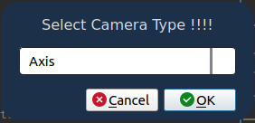
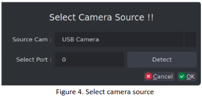
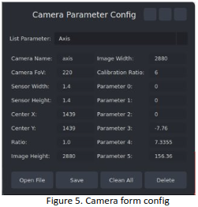

Tutorial
Warning
Follow these steps carefully so you can understand how to contribute using moilUtils.
Use Function Provided
>> from moilutils import mutils
Function |
Example |
Note |
|---|---|---|
select_type_camera() |
type_camera = mutils.select_type_camera() |
Ready |
select_source_camera() |
source_camera = mutils.select_source_camera() |
Ready |
form_camera_parameter() |
source_camera = mutils.form_camera_parameter() |
Ready |
show_image_to_label() |
mutils.show_image_to_label(self.label, src, 800) |
Ready |
connect_to_moildev() |
moildev = mutils.connect_to_moildev(type_camera= camera_type) |
Ready |
check_usb_camera_available() |
usb_camera = mutils.check_usb_camera_available() |
Ready |
read_image() |
src = mutils.read_image(“../docs/source/assets/colon_phantom.png”) |
Ready |
remap_image() |
anypoint = mutils.remap_image(image, mapx, mapy) |
Ready |
draw_polygon() |
image = mutils.draw_polygon(image, mapX, mapY) |
Ready |
select_file() |
image = mutils.select_file(“Select file”, “./docs/source/assets/colon_phantom.png”) |
Ready |
select_directory() |
image = mutils.select_directory(None, “Select directory”) |
Ready |
copyDirectory() |
mutils.copy_directory(src, dst) |
Ready |
resize_image() |
image = mutils.resize_image(src, 400) |
Ready |
rotate_image() |
rotate_image = mutils.rotate_image(image, 90) |
Ready |
calculate_height() |
image_h = mutils.calculate_height(src, 400) |
Ready |
write_camera_type() |
image = mutils.write_camera_type(“../docs/source/assets/colon_phantom.png”, “raspi”) |
Ready |
read_camera_type() |
camera_type = mutils.read_camera_type(“../docs/source/assets/colon_phantom.png”) |
Ready |
draw_point() |
image = mutils.draw_point(image1, (100, 100), 5) |
Ready |
saveImage() |
image = mutils.save_image(image, “../docs/source/assets/colon_phantom.png”) |
Ready |
drawLine() |
draw_line = mutils.draw_line(image1, (200, 200)) |
Ready |
calculate_ratio_image2label() |
ratio_x, ratio_y = mutils.calculate_ratio_image2label(label, image) |
Ready |
Important!
MoilUtils provides several functions that can be used for implementation in the current Omnidirectional Imaging Laboratory application development, as below:
select_type_camera()
Each image and video have different parameters depending on the camera used. This function allows a user to choose what parameter will be used. this function will open a dialog and you can select the parameter available from Combobox. for example:
>> type_camera = mutils.select_type_camera()
The dialog will be shown like the picture below. Just select oke after you choose the name of the parameter.
{kind=link}
select_source_camera()
Open dialog to select the camera source. the available source camera from this dialog is a USB camera and a streaming camera. To get the camera source from this dialog, you can use the command line shown below:
>> cameraSource = mutils.select_source_camera()
{kind=link}
form_camera_parameter()
Open camera parameters from to view detailed parameters of each camera. you just need to use it very easily by calling the function like the example below:
>> params = mutils.form_camera_parameter()
The result of this function is shown like picture bellow this:
{kind=link}
Design User Interface
Open the user interface
{kind=link}
Editing the user interface like you want
{kind=link}
Save the user interface
{kind=link}
Running the program
{kind=link}
Connect some function like showing camera parameter using moilutils-template
{kind=link}
Connect some function like showing select directory in computer using moilutils-template
{kind=link}
The program showing original image and remap image (anypoint)
{kind=link}